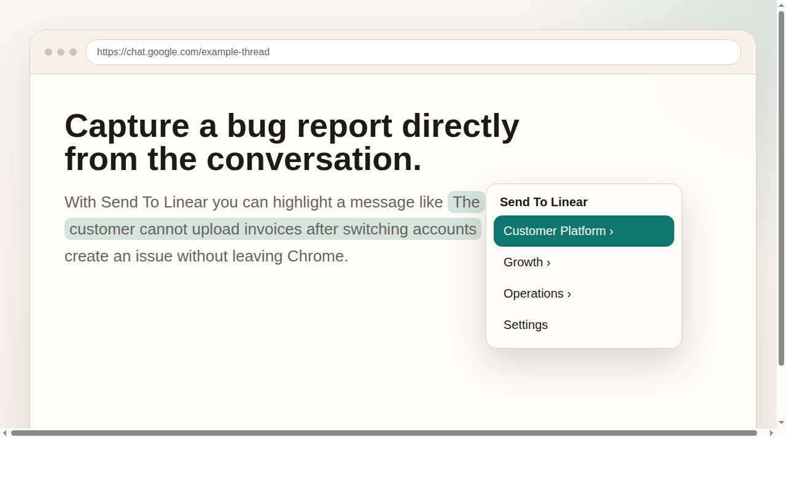
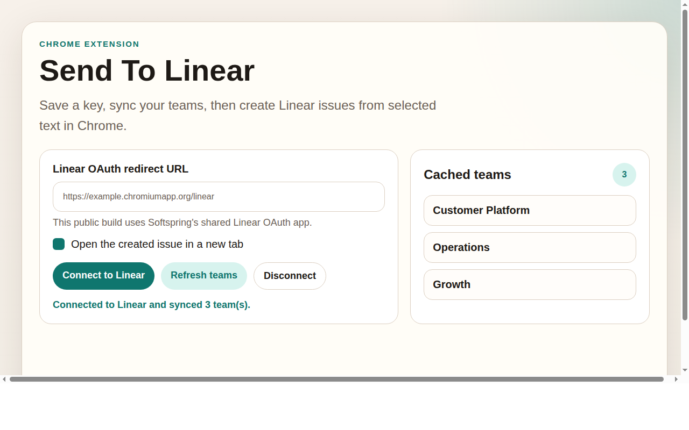

Simple workflow
Select text, open the context menu, pick a team, and the extension creates the issue.
Highlight text on the web, right-click, choose Send To Linear, and send it straight to the right team. Built for fast capture without copying into another app.
Select text, open the context menu, pick a team, and the extension creates the issue.
Each user connects with their own Linear account through OAuth instead of pasting a raw API key.
The created issue includes the selected text, source page title, and source URL.


Built with by Softspring